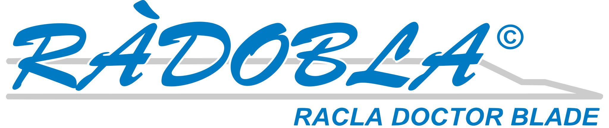
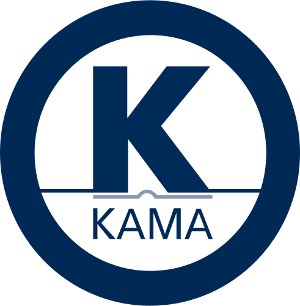
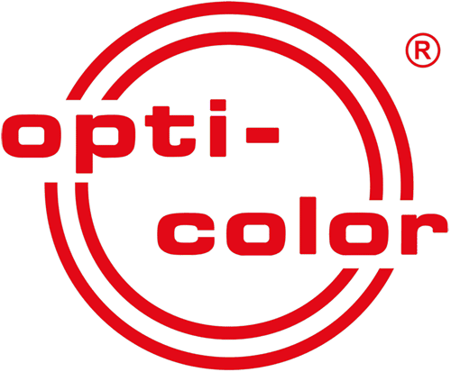

מי אנחנו
חברת אלדור לדפוס נוסדה בשנת 1983 על ידי פטר ודורית נלקה ועוסקת בשווק וביבוא ציוד לענף הדפוס.
החברה חרטה על דגלה את עקרונות האמינות והשרות ללקוח. פטר ודורית שוקדים לקיים וליישם עקרונות אלה שעה שעה, יום יום ולילה לילה… חברת אלדור משווקת ציוד של היצרנים המובילים בתחומם בעולם ומספקת עבורו שרות אמין, מהיר ומקצועי.

נציגויות
חברת אלדור לדפוס מייצגת בישראל מספר חברות מהמובילות בעולם בציוד ומיכון לדפוס ובינהן:
-

חברת Radobla מייצרת doctor blades. החברה מציעה פתרונות למגוון שימושים במכונות להדפסת פלקסו ולמריחת לכה במגדלי לכה במכונות אופסט, עם התאמה אישית לצורכי הלקוח.
-
Koenig & Bauer MetalPrint היא היצרנית הגדולה ביותר בעולם של מכונות מתקדמות להדפסה על פח. החברה מתמחה בפיתוח פתרונות חדשניים להדפסת פחים לשימושים תעשייתיים ואמנותיים, תוך הקפדה על איכות גבוהה ואמינות לאורך זמן.
-
Perfecta היא יצרנית הגיליוטינות הוותיקה בעולם, עם ניסיון של עשרות שנים בייצור מכונות חיתוך מדויקות. מוצרי החברה מיועדים לתעשיות הדפוס והאריזה, וכוללים דגמים ידניים ואוטומטיים המשלבים טכנולוגיות מתקדמות.
-

Kama מייצרת מכונות שטנץ עם אפשרויות להטבעה חמה והוספת פוייל, וכן מכונות אוטומטיות לקיפול והדבקה. מכונות החברה מתאימות למגוון רחב של יישומים בתעשיית הדפוס, ומציעות פתרונות איכותיים לעיבוד עבודות דפוס מתקדמות.
-
 Toppy מתמחה בפתרונות מתקדמים להפיכת גליונות וגלילים. החברה מציעה מהפכי גליונות ניידים ונייחים הכוללים אפשרויות לרטט ולהוספת מפוח לשיפור תהליך ההיפוך, וכן מהפכי גלילים המיועדים לשימוש תעשייתי מגוון.
Toppy מתמחה בפתרונות מתקדמים להפיכת גליונות וגלילים. החברה מציעה מהפכי גליונות ניידים ונייחים הכוללים אפשרויות לרטט ולהוספת מפוח לשיפור תהליך ההיפוך, וכן מהפכי גלילים המיועדים לשימוש תעשייתי מגוון. -
Baldwin מפתחת ומספקת מערכות קירור וערבול מים למכונות דפוס, לצד מערכות רחיצה מתקדמות. מוצרי החברה משפרים את היעילות והניקיון בתהליכי הדפסה, ותורמים להארכת חיי המכונות ולשמירה על איכות העבודה.
-
 Contitech היא יצרנית הבלנקטים הגדולה והמובילה בגרמניה. החברה מתמחה בייצור בלנקטים באיכות גבוהה לכל סוגי ההדפסה, ומספקת פתרונות המותאמים לצרכים הספציפיים של מכונות דפוס אופסט, פלקסו ודפוס דיגיטלי.
Contitech היא יצרנית הבלנקטים הגדולה והמובילה בגרמניה. החברה מתמחה בייצור בלנקטים באיכות גבוהה לכל סוגי ההדפסה, ומספקת פתרונות המותאמים לצרכים הספציפיים של מכונות דפוס אופסט, פלקסו ודפוס דיגיטלי. -
 Böttcher היא יצרנית הגלילים המקוריים למכונות הדפסה מובילות כמו KBA, Heidelberg וקומורי. החברה, הגדולה והוותיקה בתחומה בעולם, מתמחה בפתרונות גלילים מתקדמים המיוצרים באיכות גבוהה ומתאימים לכל סוגי תעשיות הדפוס.
Böttcher היא יצרנית הגלילים המקוריים למכונות הדפסה מובילות כמו KBA, Heidelberg וקומורי. החברה, הגדולה והוותיקה בתחומה בעולם, מתמחה בפתרונות גלילים מתקדמים המיוצרים באיכות גבוהה ומתאימים לכל סוגי תעשיות הדפוס. -
 Apex מתמחה בייצור גלילי ושרוולי אנילוקס חדשים ומחודשים לכל סוגי מכונות הדפוס בעולם, כולל לדפוס אופסט, דפוס פלקסו וציפויי לכה. Apex היא מהחברות המובילות בתחומה, והיא פיתחה את טכנולוגיית GTT החדשנית למריחת צבע ולכה באופן מדויק ויעיל.
Apex מתמחה בייצור גלילי ושרוולי אנילוקס חדשים ומחודשים לכל סוגי מכונות הדפוס בעולם, כולל לדפוס אופסט, דפוס פלקסו וציפויי לכה. Apex היא מהחברות המובילות בתחומה, והיא פיתחה את טכנולוגיית GTT החדשנית למריחת צבע ולכה באופן מדויק ויעיל. -

Opticolor היא יצרנית מתקדמת של יחידות מדידה ובקרה, לצד מערכות לניהול נוזלים. החברה מפתחת פתרונות מותאמים למשימות מיוחדות של ניקוי, תחזוקה ומינון רכיבים נוזליים, ומספקת מערכות חכמות לתעשיית הדפוס והכימיה.
- ואחרות...
מוצרים
מגוון המוצרים כולל בלנקטים סטנדרטיים באיכות גבוהה וכן בלנקטים ייעודיים להדפסת לכה, המותאמים לצרכים הייחודיים של תהליכי הדפסה מתקדמים. בנוסף, החברה מציעה גלילי גומי בעלי ביצועים מעולים המתאימים למכונות הדפסה שונות, וכן תוספי מים מתקדמים לשיפור תהליך ההעברה והיצמדות הדיו. בתחום התחזוקה והניקוי, אנו מציעים חומרי רחיצה ייעודיים שתורמים להארכת חיי הרכיבים ולהבטחת איכות הדפסה מיטבית לאורך זמן. עוד כולל ההיצע מערכות ערבול ומינון חכמות לנוזלים, המאפשרות שליטה מדויקת בתהליכי הכנה ויישום. בתחום בקרת האקלים בתהליך הדפוס, אנו מציעים מערכות קירור וצינון מתקדמות, לצד מערכות ייבוש בטכנולוגיות IR ו-UV, המבטיחות ייבוש מהיר ואחיד גם בהדפסות מהירות. כמו כן, החברה מספקת מפזרי אבקה יעילים לכל שיטות ההדפסה, המסייעים במניעת הידבקות בין הדפים. לבסוף, ניתן למצוא אצלנו גם גלילי אנילוקס חדשים או מחודשים, המיועדים ליישומי צבע ולכה בדיוק גבוה ובהתאמה אישית לסוג המכונה ולצרכים התפעוליים של הלקוח.